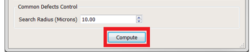

After setting up the inspection file parameters,
you must set up the controls for common defects.
Procedure
- In the Common Defects Control section of the Calibre
MDPAutoClassify dialog box, enter a value for the Search Radius
(Microns) field.
Search Radius (Microns) is a parameter whose value
determines the radius to be used to determine which defects are
common across inspections based on their location on the mask. A
sample value of 3 um means that if defects from different inspections
have their locations within 3 um of each other, then they are essentially
the same defect. More on repeatability analysis can be found in
the Calibre DefectReview User’s Manual.
A default value of 10 microns is used by Calibre MDPAutoClassify.
The importance of finding out whether a defect is common or an
adder is explained in the “Defect Source Type Classification”.
- Click the Compute button to initiate
a Calibre MDPAutoClassify run on specified inspections.
Figure 1. Compute
Button
A progress bar dialog appears to indicate the
progress until the run completes.
Results
Once Compute in the Calibre MDPAutoClassify
dialog box is pressed, a progress bar appears for each of the specified
inspections. Upon completion of execution on all the inspections,
the defect list is updated with defect classification and other information
as detailed in “Calibre MDPAutoClassify Results”.